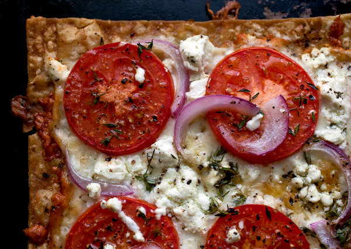

Pizza

This is another favorite of Moose. While he doesn't make them as often anymore, it is still considered a staple by him.
This recipe was more common during his "gymbro" days, as it features low caloric content and high protein.
Ingredients
- Lavash bread
- Pre cut pepperoni
- Mozzarella cheese
- Tomato spread (any pizza sauce can work)
- Olive oil
- Toppings of choice
Steps
- Spread tomato on bread
- Sprinkle mozzarella
- Put any topping you would like toasted
- Bake at 350 until edges brown
- Drizzle olive oil to serve
- Enjoy!